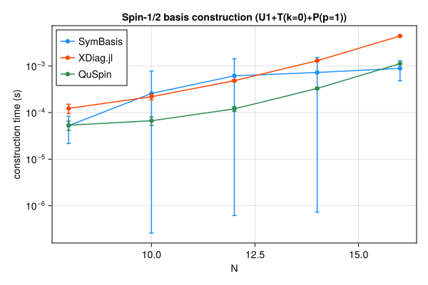
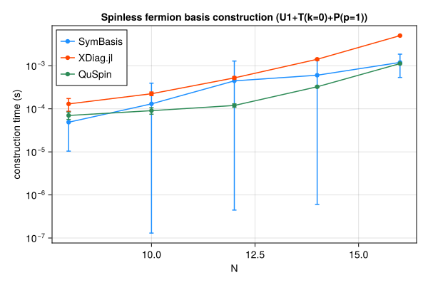
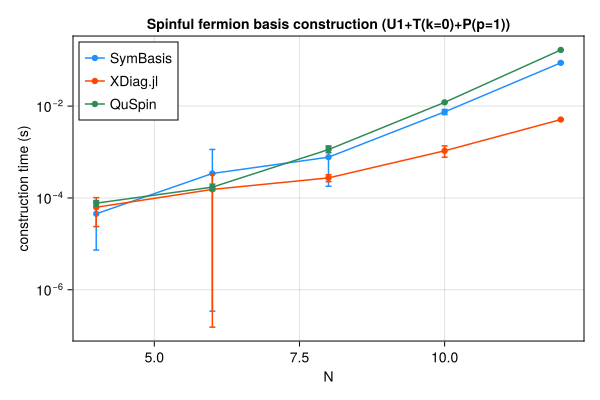
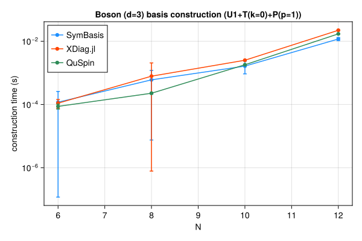

Symmetry-resolved basis construction and representative-state lookup speed, compared against XDiag.jl and QuSpin. SymBasis is benchmarked against its own dev checkout; XDiag.jl and QuSpin are whatever their latest released versions were at the time this page was generated. Regenerated automatically on every SymBasis release.
Threads are left at each library's own defaults (JULIA_NUM_THREADS=auto, OMP_NUM_THREADS unset) rather than pinned to 1 – these numbers reflect out-of-the-box performance, not a strictly single-threaded comparison.
Sweep: BENCH_SWEEP=quick
plot_construction("spin", "Spin-1/2")

| N | config | dim | SymBasis | XDiag | QuSpin | XDiag/SymBasis | QuSpin/SymBasis |
|---|
| 8 | U1 | 70 | 7.246e-05 ± 8.5e-05 s | 4.304e-06 ± 6.8e-06 s | 3.969e-05 ± 1.5e-05 s | 0.06x | 0.55x |
| 8 | U1+T(k=0) | 10 | 4.581e-05 ± 3.5e-05 s | 5.402e-05 ± 2.8e-05 s | 4.84e-05 ± 1.2e-05 s | 1.18x | 1.06x |
| 8 | U1+T(k=0)+P(p=1) | 8 | 5.264e-05 ± 3.1e-05 s | 0.0001234 ± 2.8e-05 s | 5.367e-05 ± 1.2e-05 s | 2.35x | 1.02x |
| 10 | U1 | 252 | 9.3e-05 ± 0.00014 s | 4.699e-06 ± 8e-06 s | 3.412e-05 ± 7e-06 s | 0.05x | 0.37x |
| 10 | U1+T(k=0) | 26 | 0.0005512 ± 0.00073 s | 9.848e-05 ± 2.5e-05 s | 5.252e-05 ± 8.5e-06 s | 0.18x | 0.10x |
| 10 | U1+T(k=0)+P(p=1) | 16 | 0.0002582 ± 0.00052 s | 0.0002195 ± 3.3e-05 s | 6.691e-05 ± 1.4e-05 s | 0.85x | 0.26x |
| 12 | U1 | 924 | 0.0005602 ± 0.00074 s | 4.777e-06 ± 7.2e-06 s | 4.585e-05 ± 9e-06 s | 0.01x | 0.08x |
| 12 | U1+T(k=0) | 80 | 0.0002421 ± 0.00041 s | 0.0002786 ± 4.9e-05 s | 9.146e-05 ± 9e-06 s | 1.15x | 0.38x |
| 12 | U1+T(k=0)+P(p=1) | 50 | 0.0006168 ± 0.00082 s | 0.0004852 ± 2e-05 s | 0.0001204 ± 1.4e-05 s | 0.79x | 0.20x |
| 14 | U1 | 3432 | 0.0006417 ± 0.00075 s | 6.626e-06 ± 7.3e-06 s | 6.793e-05 ± 9.1e-06 s | 0.01x | 0.11x |
| 14 | U1+T(k=0) | 246 | 0.0002002 ± 7.2e-05 s | 0.0009149 ± 2.7e-05 s | 0.0002276 ± 1.5e-05 s | 4.57x | 1.14x |
| 14 | U1+T(k=0)+P(p=1) | 133 | 0.0007283 ± 0.0008 s | 0.001306 ± 3.9e-05 s | 0.0003305 ± 1.2e-05 s | 1.79x | 0.45x |
| 16 | U1 | 12870 | 0.0006392 ± 0.00061 s | 7.025e-06 ± 8.5e-06 s | 0.0001508 ± 1.1e-05 s | 0.01x | 0.24x |
| 16 | U1+T(k=0) | 810 | 0.0007532 ± 0.00056 s | 0.003607 ± 7.8e-05 s | 0.0007396 ± 1.5e-05 s | 4.79x | 0.98x |
| 16 | U1+T(k=0)+P(p=1) | 440 | 0.0008924 ± 0.00041 s | 0.004418 ± 0.00011 s | 0.001125 ± 1.5e-05 s | 4.95x | 1.26x |
| N | config | nsamples | SymBasis | XDiag | QuSpin |
|---|
| 16 | U1+T(k=0)+P(p=1) | 10000 | 3.05e-07 ± 5.4e-09 s | N/A (no decoupled API) | 1.791e-07 ± 1.2e-09 s |
plot_construction("fermion", "Spinless fermion")

| N | config | dim | SymBasis | XDiag | QuSpin | XDiag/SymBasis | QuSpin/SymBasis |
|---|
| 8 | U1 | 70 | 4.525e-05 ± 6e-05 s | 4.381e-06 ± 7e-06 s | 4.923e-05 ± 1.9e-05 s | 0.10x | 1.09x |
| 8 | U1+T(k=0) | 9 | 4.504e-05 ± 3.9e-05 s | 5.398e-05 ± 2.9e-05 s | 6.296e-05 ± 1.3e-05 s | 1.20x | 1.40x |
| 8 | U1+T(k=0)+P(p=1) | 6 | 4.877e-05 ± 3.8e-05 s | 0.0001298 ± 4.3e-05 s | 7e-05 ± 1.3e-05 s | 2.66x | 1.44x |
| 10 | U1 | 252 | 0.0001409 ± 0.0002 s | 4.427e-06 ± 6.9e-06 s | 5.093e-05 ± 1.2e-05 s | 0.03x | 0.36x |
| 10 | U1+T(k=0) | 26 | 5.225e-05 ± 3.5e-05 s | 0.0001077 ± 2.8e-05 s | 7.688e-05 ± 1e-05 s | 2.06x | 1.47x |
| 10 | U1+T(k=0)+P(p=1) | 16 | 0.0001302 ± 0.00026 s | 0.0002236 ± 2.1e-05 s | 9.044e-05 ± 1.6e-05 s | 1.72x | 0.69x |
| 12 | U1 | 924 | 4.928e-05 ± 3.4e-05 s | 4.958e-06 ± 7.1e-06 s | 5.846e-05 ± 8.3e-06 s | 0.10x | 1.19x |
| 12 | U1+T(k=0) | 76 | 0.0001256 ± 0.00011 s | 0.0003965 ± 0.00024 s | 0.0001056 ± 2.4e-05 s | 3.16x | 0.84x |
| 12 | U1+T(k=0)+P(p=1) | 33 | 0.0004451 ± 0.00084 s | 0.0005216 ± 3.7e-05 s | 0.0001195 ± 1.1e-05 s | 1.17x | 0.27x |
| 14 | U1 | 3432 | 0.0004435 ± 0.00059 s | 5.378e-06 ± 7.1e-06 s | 6.436e-05 ± 8.3e-06 s | 0.01x | 0.15x |
| 14 | U1+T(k=0) | 246 | 0.0009056 ± 0.00093 s | 0.001033 ± 2.6e-05 s | 0.000225 ± 1.3e-05 s | 1.14x | 0.25x |
| 14 | U1+T(k=0)+P(p=1) | 113 | 0.0006018 ± 0.00073 s | 0.001411 ± 5.1e-05 s | 0.0003244 ± 1.2e-05 s | 2.34x | 0.54x |
| 16 | U1 | 12870 | 0.0004959 ± 9.9e-05 s | 7.148e-06 ± 9e-06 s | 0.0001503 ± 1.1e-05 s | 0.01x | 0.30x |
| 16 | U1+T(k=0) | 809 | 0.0005185 ± 6.7e-05 s | 0.004057 ± 2.8e-05 s | 0.0007385 ± 2.3e-05 s | 7.82x | 1.42x |
| 16 | U1+T(k=0)+P(p=1) | 422 | 0.001193 ± 0.00066 s | 0.004997 ± 2.3e-05 s | 0.001121 ± 9.1e-06 s | 4.19x | 0.94x |
| N | config | nsamples | SymBasis | XDiag | QuSpin |
|---|
| 16 | U1+T(k=0)+P(p=1) | 10000 | 3.666e-07 ± 1.1e-09 s | N/A (no decoupled API) | 1.883e-06 ± 1.4e-08 s |
plot_construction("spinful_fermion", "Spinful fermion")

| N | config | dim | SymBasis | XDiag | QuSpin | XDiag/SymBasis | QuSpin/SymBasis |
|---|
| 4 | U1 | 36 | 6.104e-05 ± 7.3e-05 s | 6.107e-06 ± 9.5e-06 s | 5.861e-05 ± 2e-05 s | 0.10x | 0.96x |
| 4 | U1+T(k=0) | 10 | 4.674e-05 ± 3.2e-05 s | 3.651e-05 ± 4.2e-05 s | 7.168e-05 ± 2e-05 s | 0.78x | 1.53x |
| 4 | U1+T(k=0)+P(p=1) | 6 | 4.522e-05 ± 3.8e-05 s | 6.268e-05 ± 3.9e-05 s | 7.7e-05 ± 1.1e-05 s | 1.39x | 1.70x |
| 6 | U1 | 400 | 6.256e-05 ± 5.8e-05 s | 7.595e-06 ± 1.1e-05 s | 6.846e-05 ± 9.8e-06 s | 0.12x | 1.09x |
| 6 | U1+T(k=0) | 68 | 6.916e-05 ± 4.2e-05 s | 5.42e-05 ± 4e-05 s | 0.0001227 ± 1e-05 s | 0.78x | 1.77x |
| 6 | U1+T(k=0)+P(p=1) | 38 | 0.0003415 ± 0.0008 s | 0.0001535 ± 0.00018 s | 0.000172 ± 2.7e-05 s | 0.45x | 0.50x |
| 8 | U1 | 4900 | 0.0002673 ± 4.5e-05 s | 5.586e-06 ± 9.6e-06 s | 0.0001242 ± 8.7e-06 s | 0.02x | 0.46x |
| 8 | U1+T(k=0) | 618 | 0.001614 ± 0.0009 s | 0.0001224 ± 3.3e-05 s | 0.0005275 ± 1.1e-05 s | 0.08x | 0.33x |
| 8 | U1+T(k=0)+P(p=1) | 318 | 0.0007723 ± 0.00059 s | 0.0002735 ± 4.7e-05 s | 0.001132 ± 0.00017 s | 0.35x | 1.47x |
| 10 | U1 | 63504 | 0.00279 ± 0.00075 s | 6.222e-06 ± 1e-05 s | 0.001102 ± 8.9e-05 s | 0.00x | 0.40x |
| 10 | U1+T(k=0) | 6352 | 0.004761 ± 0.00073 s | 0.0003987 ± 4.5e-05 s | 0.006481 ± 1.4e-05 s | 0.08x | 1.36x |
| 10 | U1+T(k=0)+P(p=1) | 3212 | 0.007491 ± 0.00095 s | 0.001064 ± 0.00029 s | 0.01208 ± 5.4e-05 s | 0.14x | 1.61x |
| 12 | U1 | 853776 | 0.02407 ± 0.017 s | 1.008e-05 ± 1.4e-05 s | 0.01578 ± 6.6e-05 s | 0.00x | 0.66x |
| 12 | U1+T(k=0) | 71188 | 0.0528 ± 0.0048 s | 0.002073 ± 6.2e-05 s | 0.08989 ± 0.00018 s | 0.04x | 1.70x |
| 12 | U1+T(k=0)+P(p=1) | 35694 | 0.08755 ± 0.0027 s | 0.005093 ± 4.7e-05 s | 0.1673 ± 0.00048 s | 0.06x | 1.91x |
| N | config | nsamples | SymBasis | XDiag | QuSpin |
|---|
| 12 | U1+T(k=0)+P(p=1) | 10000 | 1.384e-06 ± 8.1e-09 s | N/A (no decoupled API) | 2.219e-06 ± 1.1e-08 s |
plot_construction("boson", "Boson (d=3)")

| N | config | dim | SymBasis | XDiag | QuSpin | XDiag/SymBasis | QuSpin/SymBasis |
|---|
| 6 | U1 | 141 | 3.527e-05 ± 4e-05 s | 4.946e-06 ± 6.9e-06 s | 5.55e-05 ± 1.1e-05 s | 0.14x | 1.57x |
| 6 | U1+T(k=0) | 26 | 5.251e-05 ± 3.5e-05 s | 6.159e-05 ± 2.9e-05 s | 7.841e-05 ± 1.2e-05 s | 1.17x | 1.49x |
| 6 | U1+T(k=0)+P(p=1) | 18 | 0.000118 ± 0.00014 s | 0.0001101 ± 3.4e-05 s | 8.718e-05 ± 1.6e-05 s | 0.93x | 0.74x |
| 8 | U1 | 1107 | 8.527e-05 ± 3.9e-05 s | 8.788e-06 ± 9.1e-06 s | 9.444e-05 ± 1.2e-05 s | 0.10x | 1.11x |
| 8 | U1+T(k=0) | 142 | 0.0001688 ± 4.2e-05 s | 0.0002542 ± 4e-05 s | 0.0002262 ± 1.4e-05 s | 1.51x | 1.34x |
| 8 | U1+T(k=0)+P(p=1) | 84 | 0.000602 ± 0.00059 s | 0.0007852 ± 0.0013 s | 0.0002267 ± 1.4e-05 s | 1.30x | 0.38x |
| 10 | U1 | 8953 | 0.0004275 ± 0.00017 s | 1.156e-05 ± 9.3e-06 s | 0.0002951 ± 1.1e-05 s | 0.03x | 0.69x |
| 10 | U1+T(k=0) | 902 | 0.0007547 ± 7.5e-05 s | 0.001975 ± 2.9e-05 s | 0.001504 ± 1.1e-05 s | 2.62x | 1.99x |
| 10 | U1+T(k=0)+P(p=1) | 486 | 0.001636 ± 0.00071 s | 0.002507 ± 3.4e-05 s | 0.001802 ± 1e-05 s | 1.53x | 1.10x |
| 12 | U1 | 73789 | 0.003887 ± 0.001 s | 3.173e-05 ± 1.3e-05 s | 0.002092 ± 1.3e-05 s | 0.01x | 0.54x |
| 12 | U1+T(k=0) | 6166 | 0.006412 ± 0.00051 s | 0.01859 ± 7e-05 s | 0.01419 ± 3.2e-05 s | 2.90x | 2.21x |
| 12 | U1+T(k=0)+P(p=1) | 3179 | 0.01176 ± 0.0013 s | 0.0222 ± 0.00037 s | 0.0171 ± 0.00035 s | 1.89x | 1.45x |
| N | config | nsamples | SymBasis | XDiag | QuSpin |
|---|
| 12 | U1+T(k=0)+P(p=1) | 10000 | 1.732e-06 ± 1.1e-08 s | N/A (no decoupled API) | 3.202e-07 ± 8.5e-09 s |